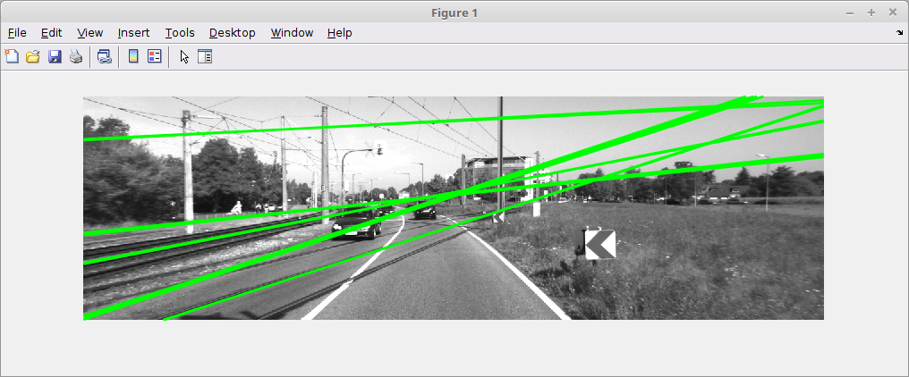
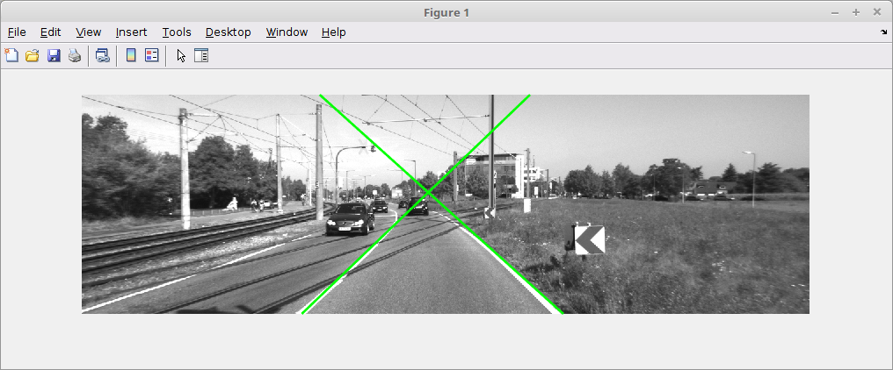
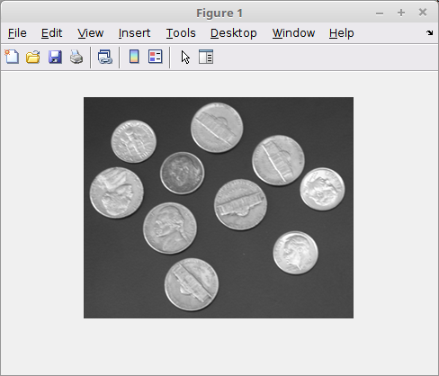
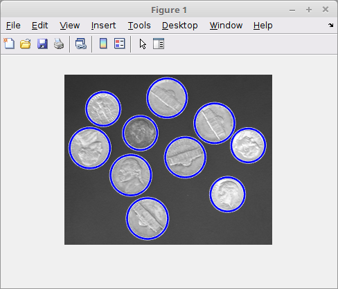
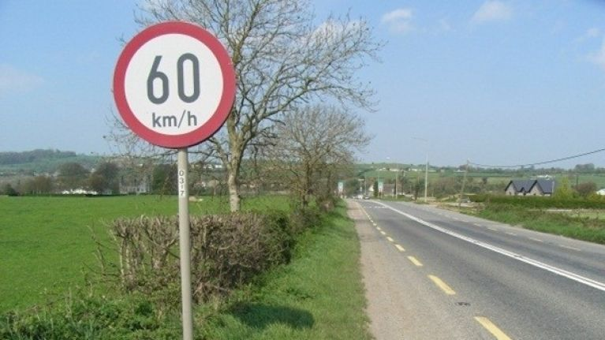
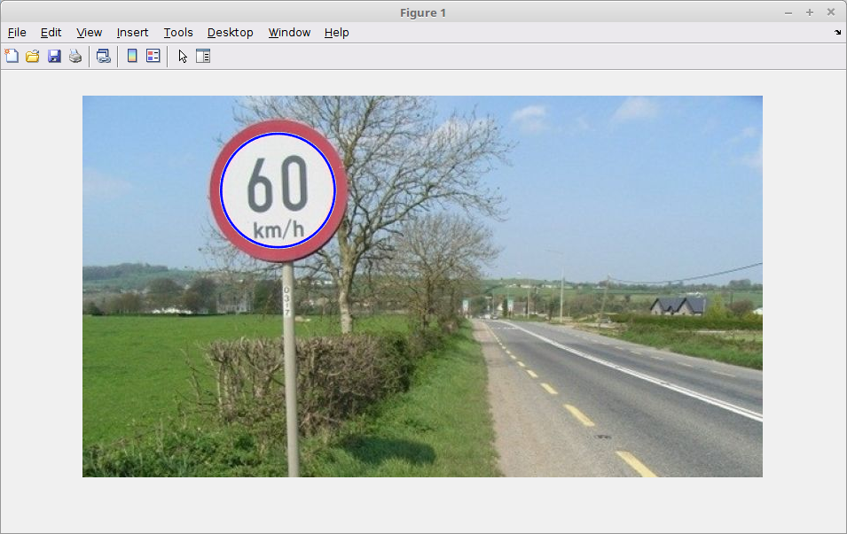
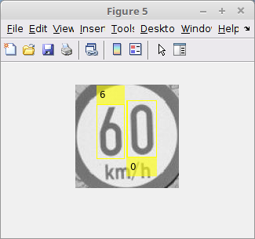

Use Hough transform for feature extraction in images
In this lab you will use Hough transform to detect lane markings and road signs in test images.
Download a set of test images for your code from here
Extract the contents of the zip file to a suiable location
Create a new file in matlab called "lanes.m" and add the following code:
I = imread('um_000003.png');
% IG=rgb2gray(I)
BW = edge(I,'sobel');
[H,T,R] = hough(BW);
P = houghpeaks(H,5,'threshold',ceil(0.3*max(H(:))),'NHoodSize',[95 95]);
lines = houghlines(BW,T,R,P,'FillGap',40,'MinLength',30);
figure, imshow(I), hold on
[rows columns]=size(I)
max_len = 0;
for k = 1:length(lines)
xy = [lines(k).point1; lines(k).point2]
% Get the equation of the line
x1 = xy(1,1);
y1 = xy(1,2);
x2 = xy(2,1);
y2 = xy(2,2);
slope = (y2-y1)/(x2-x1);
xLeft = 1;
yLeft = slope * (xLeft - x1) + y1;
xRight = columns;
yRight = slope * (xRight - x1) + y1;
plot([xLeft, xRight], [yLeft, yRight], 'LineWidth',2,'Color','green');
endAdd the image files to the Matlab path and run the program. You should see output similar to the following:

There are some issues with this program
Modify the program to as follows:
imcrop function specifying the crop rectangle.theta range in the Hough transform function call.The output should look something like this:

You will now use the Matlab circular Hough transform to detect circular (speed) signs. First, lets try the simple built-in example for circular detection.
circles.m and enter the following code:I = imread('coins.png');
imshow(I)
circles.m script:[centers, radii, metric] = imfindcircles(A,[15 30]);
viscircles(centers, radii,'EdgeColor','b');If you research the imfindcircles() function you'll see that it uses Hough transforms to detect circles. You also can specify various params such as radius range, [15 30]. See Matlab documentation for more info.

imfindcircles function returns a list of centres and associated radii for detected circles. Add the following code to just detect the strongest circles:centersStrong5 = centers(1:4,:);
radiiStrong5 = radii(1:4);
viscircles(centersStrong5, radiiStrong5,'EdgeColor','b');Irish speed limit signage is circular. Therefore, you should be able to detect signs by applying the above procedure.


Lets assume an ADAS system needs the ability to identify also and read speed signage. Try the following to read the sign and report the speed limit to the user.
After you detect the sign, crop the image to a region of interest (roi) that contains just the sign. Hint: use the radius and the centre of the detected sign to construct a region of interest
Investigate Matlabs OCR capability and apply it to this scenario as follows:
